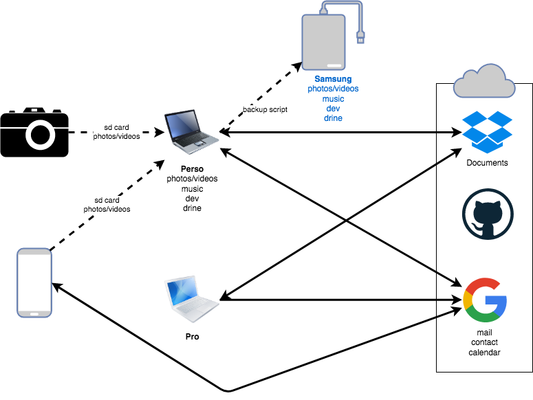

De nous jours, nous possédons de nombreux périphériques stockant toujours plus de données (à l'époque, je sauvegardais toutes mes photos sur un CD-ROM de 600 MB. Aujourd'hui, j'aurais besoin d'une centaine de CD-ROM …). Chacun de ces périphériques permette de satisfaire nos besoins (ou nos prétendus besoins). Et nous souhaitons garantir la pérennité de nos précieuses données : les photos de famille, nos bulletins de paye, … Pléthore de solutions et de stratégies existe. Dans ce billet, nous allons voir celle que j'utilise. Le but est double : me servir de pense-bête et aussi aider famille et amis dans cette tâche non triviale.
J'ai deux ordinateurs portables : un personnel (Dell XPS sous Linux) et un professionnel fourni par ma boite (Mac Book Pro), un smartphone (sous Android) et un appareil photo numérique.
Pour l'appareil photo numérique, j'enlève la carte mémoire et je la place directement dans l'emplacement prévu à cet effet de mon ordinateur portable (pour ceux qui n'ont pas de lecteur de cartes, il est possible d'en acheter un qui se branche sur le port USB). L'autre possibilité est de relier l'appareil à l'ordinateur avec un câble USB. Je copie alors les fichiers de la carte vers le disque dur de l'ordinateur. Et j'utilise alors un programme pour classer automatiquement les photos par date. J'en ai déjà parlé ici.
J'utilise mon smartphone pour téléphoner, envoyer des messages, numériser
des documents, prendre des photos et prendre des notes. Les seules données que
je souhaite conserver sont les photos. J'ai configuré mon téléphone pour
sauvegarder ces données dans la carte SD. Ainsi, je peux juste insérer la carte
dans l'ordinateur pour effectuer une copie. Le corollaire est qu'il est
inutile voire dangereux de classer les photos sur le téléphone (car cela va les
éparpiller en les déplaçant du répertoire DCIM > Camera vers
Pictures).
Avant, j'utilisais Dropbox pour synchroniser les photos de mon smartphone mais pour une raison inconnue, cela ne fonctionne plus. Et je me suis ainsi rendu compte que je n'en avais pas besoin. Le processus de copie est ainsi identique à celui de l'appareil photo.
Sur les ordinateurs, je créé/modifie/consulte des documents. J'ai besoin qu'ils soient partagés entre ces 2 ordinateurs. Une solution est de s'échanger ces documents par courriel ou de les copier sur une clé USB. Mais il est alors difficile de savoir si sur un ordinateur donné, on a bien la dernière version d'un document. Cela demande énormément de discipline. Pour résoudre ce problème, j'ai opté pour Dropbox, un service de synchronisation de fichiers dans les nuages (ce qui veut dire que mes fichiers sont physiquement copiés sur d'autres ordinateurs quelque part dans le monde).
Cependant, une mise en garde s'impose. Dropbox est un service de synchronisation et pas de sauvegarde. Si vous supprimez par mégarde un fichier, il sera supprimé partout. Par ailleurs, un avantage est d'avoir une copie des données en dehors de son domicile, ce qui permet d'être résilient à un cambriolage ou un incendie.
J'envoie aussi des courriels et j'utilise un calendrier. Mes contacts, courriels et calendriers sont synchronisés entre tous les appareils via mon compte Google. Sur l'ordinateur, j'utilise gmail et calendar directement dans le navigateur. Avant, j'utilisais une application, Thunderbird, mais l'application web me suffit.
Je sauvegarde le contenu de l'ordinateur perso sur un disque dur externe que je branche en USB pour l'occasion (j'en ai déjà parlé ici).
Pour finir, un conseil : organiser vos fichiers sans attendre et ranger les dans leur emplacement définitif. Par exemple, votre bureau, votre dossier Téléchargements devraient être vide. Les documents importants reçus par mail devraient être sauvegardés dans vos documents.
Voici un schéma qui récapitule les différents transferts de données.
